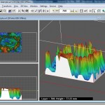

11
May
Here’s a workflow for printing 3d objects based on 3D point cloud visualisation data. It assumes access only to open source software and the Z-Print software that is shipped with a Z-Corp printer. In this example, the data represents a ground scan of an archaeological site. Here’s what you can end up with:

Click the ‘More’ link for the details.